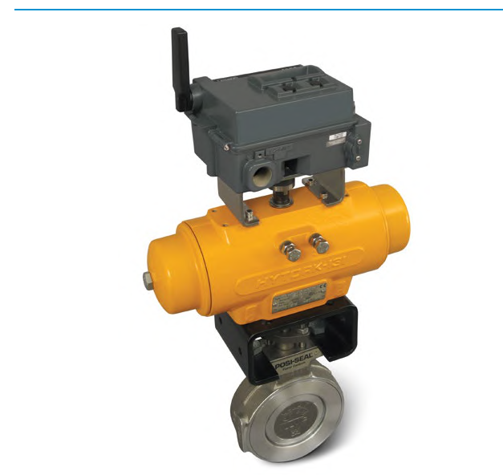

Position Transmitters: Wireless vs. Wired
Wireless

Reports a 0–100% digital signal — no wiring run needed back to the control room
Wired (baseline)
4–20 mA
continuous current loop
continuous current loop
Reports a 4–20 mA signal — the standard wired connection used by every other accessory in this chapter
After Control Valve Handbook, 6th ed., Fig. 4.13 — used directly. Component Index: cvh-cmp-4.13.